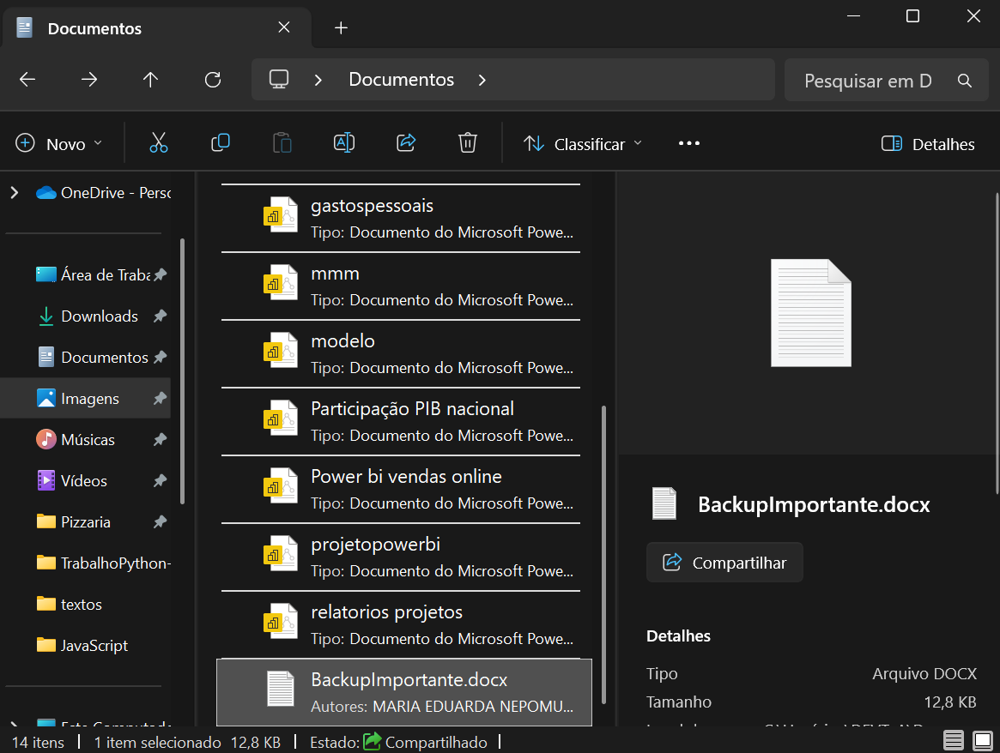
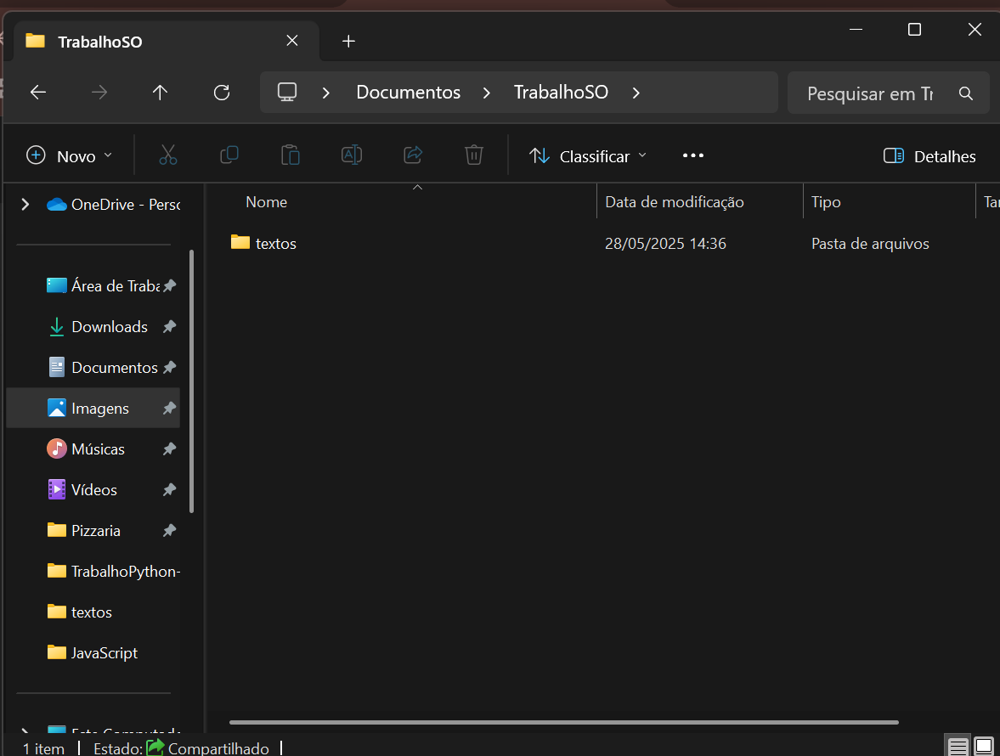
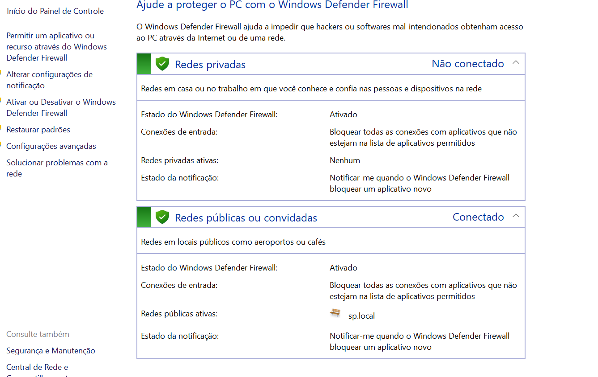

<!DOCTYPE html>
<html lang="en">
<head>
    <meta charset="UTF-8">
    <meta name="viewport" content="width=device-width, initial-scale=1.0">
    <title>Atividade2</title>
</head>
<body>
    
</body>
</html>
<h1></h1>
<h2>Atividade 2</h2>


<h1>Atividade 3</h1>


<h1>Atividade 4</h1>






<h1>Atividade 5</h1>


<h1>Atividade 6</h1>


<h1>Atividade 7</h1>


<h1>Atividade 8</h1>


<h1>Atividade 9</h1>



<h1>Atividade 10</h1>


<h1>Atividade 11</h1>


#ATIVIDADES TEÓRICAS COM FOCO EM WINDOWS E LINUX E SEGURANÇA
CIBERNÉTICA – TODA EXPLICAÇÕES DE FORMA PRÁTICA E GRÁFICA

#1. Definindo os Paradigmas: Código Aberto vs. Fechado
#Resposta : Sistemas operacionais de código aberto (como Linux e Android) têm o código-fonte visível e modificável por qualquer um, promovendo flexibilidade e custo zero, mas podem ter suporte fragmentado. Já os de código fechado (como Windows e macOS) possuem código-fonte proprietário, oferecendo suporte centralizado e facilidade de uso, porém com custo de licença e menor transparência.


#2. Análise Comparativa de Instalação
#Resposta: Instalar Windows (código fechado) exige licença paga e é mais automático, podendo precisar de drivers extras depois. Já o Ubuntu (código aberto) é gratuito, oferece mais personalização na instalação (partições, etc.) e geralmente tem drivers incluídos.

#3.Debate: Modo Texto vs. Interface Gráfica
#Resposta: A linha de comando (CLI) é poderosa e eficiente para especialistas, ideal para automação, servidores e controle granular, mas exige conhecimento técnico. Já a interface gráfica (GUI) é intuitiva e acessível para o usuário comum, perfeita para tarefas diárias e fácil aprendizado. Ambas se complementam: CLI para controle profundo e GUI para usabilidade geral.

#4.Estruturas de Diretórios: Uma Análise Comparativa
#Resposta: A estrutura de diretórios do Windows (C:\Windows, C:\Program Files, C:\Users) organiza arquivos por unidade de disco, separando sistema, programas e dados de usuário. Já o Linux (/bin, /etc, /home) segue uma hierarquia unificada baseada na função dos arquivos, com a raiz / e diretórios dedicados a binários essenciais, configurações e pastas de usuário, respectivamente.

#5.Modelos de Usuários e Permissões
#Resposta: Gerenciamento de usuários e permissões controla quem acessa e o que faz com arquivos. No Windows (NTFS), é granular, usando ACLs com permissões como "Controle Total" definidas via interface gráfica. No Linux (rwx), é mais conciso, com rwx (leitura, gravação, execução) para proprietário, grupo e outros, gerenciado por comandos como chmod.

#6.O Processo de Boot: Do Power-On ao Desktop
#Resposta: O processo de inicialização (boot) de um computador começa com o POST/UEFI (verificando o hardware), seguido pelo bootloader (como GRUB ou Windows Boot Manager) que carrega o kernel do sistema operacional. O kernel inicializa e monta o sistema de arquivos, e então o processo init/systemd carrega os serviços e a interface do usuário.

A principal diferença entre sistemas de código aberto e fechado é a flexibilidade: no Linux, o bootloader é altamente personalizável e há mais visibilidade no processo; no Windows, ele é proprietário e menos flexível, com maior integração do Secure Boot.

#7.Redes: Compartilhamento, Mapeamento, deve ser criado um exemplo.
#Resposta: Unidades e pastas em rede são espaços de armazenamento em outro computador, acessíveis como se fossem locais, usadas para centralizar dados e facilitar a colaboração. Compartilhamento é disponibilizar esses recursos na rede, enquanto acesso define as permissões (leitura, gravação) que usuários têm sobre eles. Mapeamento de unidades de rede é atribuir uma letra (ex: P:) a uma pasta compartilhada remota para acesso fácil, como se fosse um disco local.


#8. Fundamentos de Segurança Cibernética
#Resposta: Segurança Cibernética é a proteção de sistemas e dados contra ataques digitais, garantindo confidencialidade, integridade e disponibilidade. Ameaças comuns incluem Malware (vírus, ransomware), Phishing (fraudes para obter dados), Ataques DoS/DDoS (sobrecarga de serviços), Engenharia Social (manipulação humana) e Força Bruta (tentativas de senha). Vulnerabilidades são falhas que podem ser exploradas. Credenciais (usuário/senha) são chaves de acesso, e sua proteção é vital, pois o roubo delas permite acesso direto. A Engenharia Social usa a psicologia para enganar, como um falso técnico pedindo sua senha (pretexting) ou e-mails urgentes de "bancos" (phishing).

#9. Fundamentos de Segurança Cibernética
#Resposta:Para aumentar a segurança, usuários devem usar senhas fortes, 2FA, evitar phishing e fazer backups. Administradores devem focar em atualizações, mínimo privilégio, segmentação de rede, monitoramento e criptografia. O firewall nativo do sistema operacional é crucial, agindo como uma barreira que controla o tráfego de rede, prevenindo acessos não autorizados e reduzindo a superfície de ataque ao filtrar conexões.

#10. Configuração do Sistema: Pontos Críticos
#Resposta: Para otimizar um sistema operacional, um usuário avançado ou administrador precisa dominar cinco áreas cruciais:

Gerenciamento de Usuários e Permissões: Controlar quem acessa o quê (ACLs no Windows, chmod/chown no Linux) para segurança.
Serviços e Processos em Segundo Plano: Ativar/desativar serviços desnecessários para melhorar desempenho e reduzir vulnerabilidades.
Configurações de Rede: Configurar firewalls (Firewall do Windows, ufw/iptables) e conectividade para segurança e acesso.
Gerenciamento de Disco e Partições: Otimizar o uso do espaço de armazenamento e a organização dos dados.
Variáveis de Ambiente e Caminhos (Paths): Ajustar variáveis para influenciar como o sistema encontra e executa programas, melhorando a usabilidade.